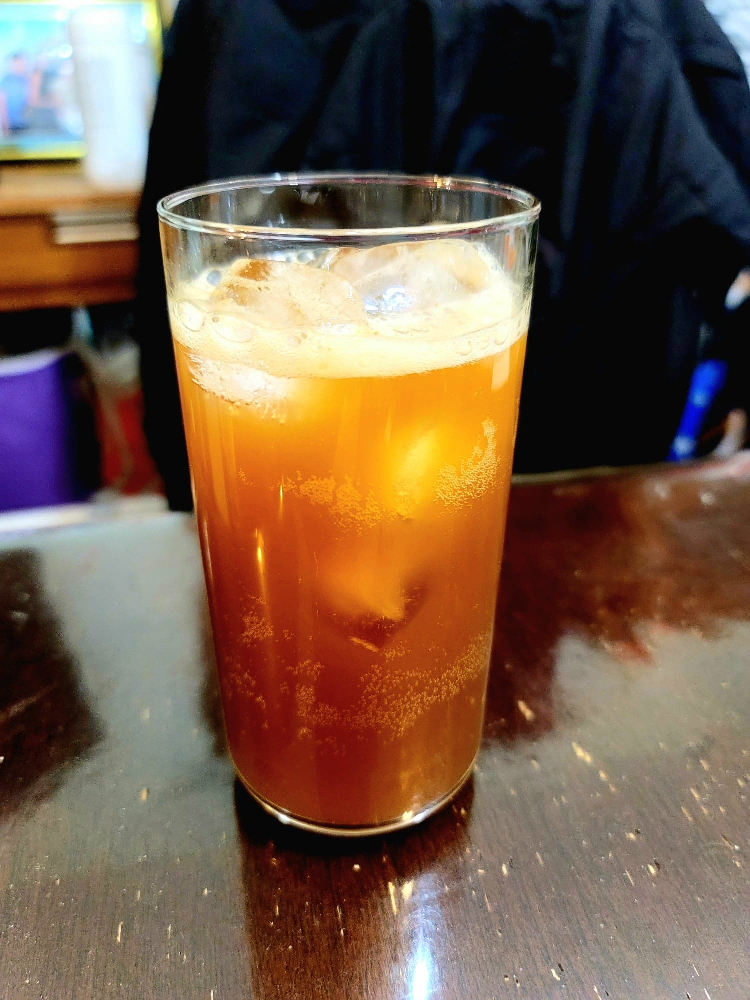

Cola

Ingredients:
- 8 cups Water, nonchlorinated
- 1 cup Brown sugar
- 2 Oranges
- 2 Limes
- 2 Lemons
- 2 inch Cinnamon stick, lightly crushed
- 2 tsp Coriander seeds, lightly crushed
- 4 tsp Ginger, chopped
- 2 tsp Vanilla
- 1/4 tsp Ground nutmeg
- 2-3 tsp Molasses or Caramel food coloring
- 1/2 cup Ginger bug
Instructions:
- Peel the rind from the oranges, limes, and lemons, excluding as much white pith as possible. Place the water, brown sugar, citrus rinds, cinnamon stick, coriander, and ginger into a large pot. Bring to a boil over high heat and then reduce to low and simmer for 20 minutes, covered.
- Remove the mixture from heat and let cool to room temperature. Stir in the juice of the citruses along with the rest of the ingredients.
- Strain the liquid into flip-top bottles and let ferment for 3-7 days until it achieves the desired amount of carbonization, burping daily. Refrigerate when ready. Serve cold.